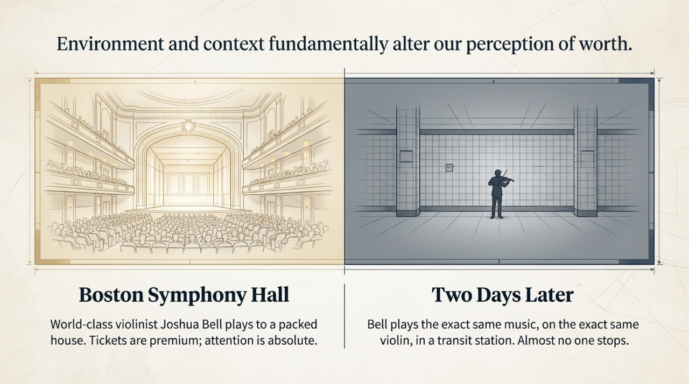
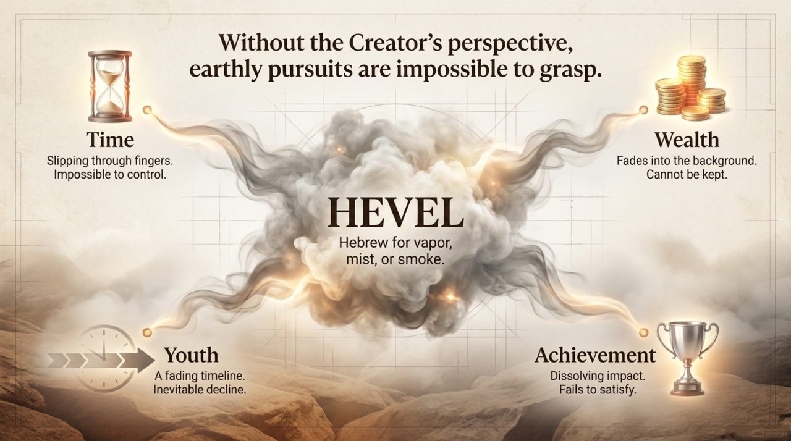
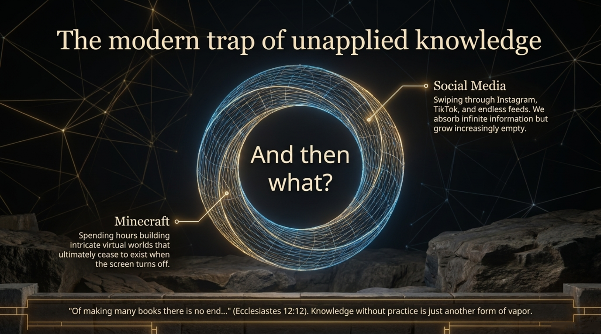
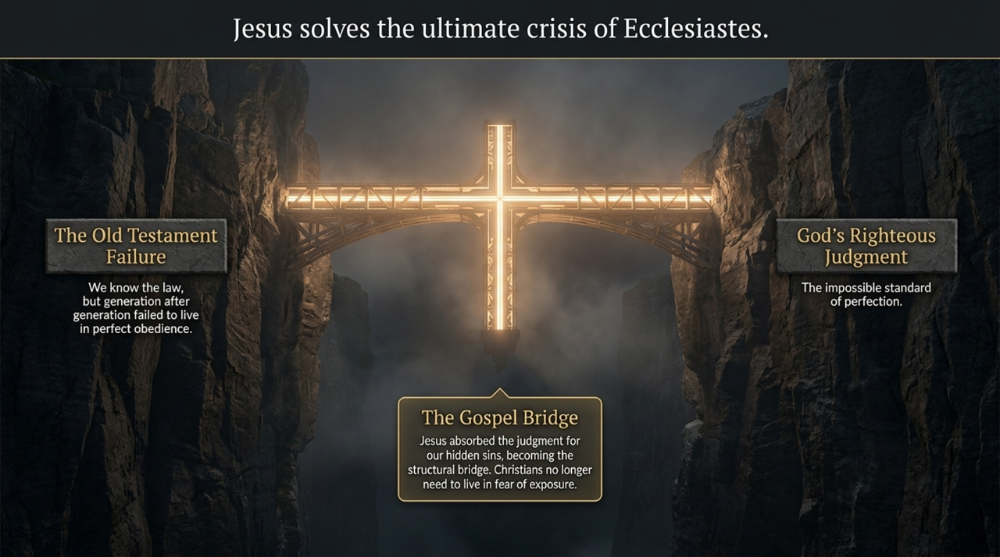
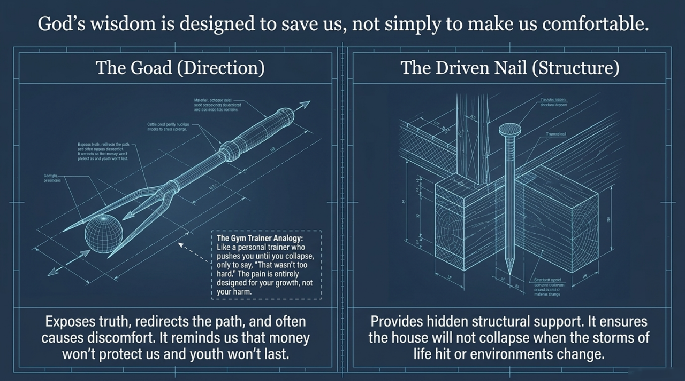

This isn't religious content. It's a book that takes your worldview seriously, stands where you stand, and walks that road more honestly than most people dare to. 这不是宗教内容。这是一本认真对待你世界观的书——它先站到你的位置上,比大多数人更诚实地把那条路走到底。
World-class violinist Joshua Bell plays to a packed hall. Tickets are premium. Attention is absolute.世界级小提琴家约书亚·贝尔登台演出,门票昂贵,全场屏息,无一分心。
The same man plays the same music on the same violin, in a transit station. Almost nobody slows down.同一个人,同一把琴,同一首曲子,换到地铁站。几乎没人放慢脚步。
Nothing about the music changed. Only the setting did — and the setting decided what people thought it was worth. That should unsettle you: how much of what you chase is valued for what it is — and how much for the room you're standing in? 音乐本身一分一毫没变。变的只是场景——而场景,决定了人们觉得它"值多少"。这该让你有点不安:你拼命追逐的东西,有多少是因为它本身的价值,又有多少,只是因为你此刻站的那个房间?
This book asks that question about your whole life — and it does it with one strange little word. 这本书,把这个问题问向你的整个人生——而它,只用了一个奇怪的小词。

Ecclesiastes 1:2 · 传道书 1:2
You think you know this line. You don't. The word translated "vanity" is the Hebrew hevel — and it does not mean "worthless." 你以为你懂这句话。其实没有。被译成"虚空"的那个词,是希伯来文 hevel——它的意思不是"没有价值"。
The point isn't that life is worthless. It's that life is unkeepable — a breath you cannot hold, mist you cannot grip. Everything good is real, and slips through your fingers anyway. That is a far more uncomfortable, and far more honest, idea. 重点不是人生没有价值,而是人生留不住——像一口呼出的气,握不住;像薄雾,抓不牢。一切美好都是真实的,却照样从指缝里溜走。这是一个远更扎心、也远更诚实的想法。
The book has another key phrase that appears nearly 30 times: "under the sun." It means life seen from a purely earthly angle — no God, no eternity, just this. The whole book honestly follows that worldview all the way to its end. 全书还有另一个关键词组,出现了将近 30 次:"日光之下"。它指的是纯粹从地上、从世俗的角度看人生——没有神、没有永恒,就只有眼前这些。整卷书,就是诚实地把这个世界观走到底。

This is a first-person experiment report. The author had unlimited money, talent, and freedom — and he ran the experiment you're quietly running on yourself. Here is his lab notebook. 这是一份第一人称的实验报告。作者拥有无限的金钱、才干和自由——他亲手做了那个你正在悄悄拿自己做的实验。下面是他的实验记录。
"I tried pleasure — I told myself, go ahead, enjoy. And it was vapor.""我试了享乐——我对自己说:来吧,尽情享受。结果是一口气。" 2:1
"I tried building — houses, vineyards, gardens, pools, an estate greater than anyone before me.""我试了建造——房屋、葡萄园、园囿、水池,一份胜过前人的家业。" 2:4–6
"I tried wealth — silver, gold, the treasure of kings. I withheld from myself nothing my eyes desired.""我试了财富——金银、君王的财宝。凡我眼所求的,我没有一样留下不给自己。" 2:8,10
"Then I looked at everything my hands had done… and it was all vapor, all chasing the wind, and there was no gain under the sun.""后来我察看我手所做的一切……谁知都是一口气,都是捕风,在日光之下毫无益处。" 2:11
He didn't fail to get the things. He got all of them. That's what makes this land: it removes the excuse "I'd be satisfied if I just had a little more." He had immeasurably more — and named the feeling out loud. 他不是没得到那些东西。他全得到了。正因如此才扎心:它拿掉了那句"只要我再多一点就满足了"的借口。他多得无法计量——然后把那种感觉说了出来。
Read the actual passage below, in the original wording, and decide for yourself. 下面读一读真正的经文,用它本来的措辞,自己判断。
Other doorways a finished site would open, ranked by how hard they hit: money never satisfies (5:10) · endless toil — for whom? (2:18–23) · death, the great leveler (3:19–20) · a time for everything (3:1–8) · receiving the present as a gift (2:24) · eternity set in the human heart (3:11). 完整网站还会打开的其他门(按杀伤力排序):钱永远不够(5:10)· 没完没了的劳碌——为谁?(2:18–23)· 死亡这个大平等器(3:19–20)· 凡事都有定期(3:1–8)· 把当下作为礼物领受(2:24)· 神把永恒放在人心里(3:11)。
The book saw it coming three thousand years early: "Of making many books there is no end." Today the feed has no end either. You can scroll, binge, and absorb forever — and feel emptier the more you take in. Information without a place to land is just another kind of vapor. 这本书三千年前就看见了:"著书多,没有穷尽。" 今天的信息流也一样没有尽头。你可以无限刷、无限看、无限吸收——却越吸收越空。没有落点的信息,只是另一种"一口气"。
Ecclesiastes 12:12 · 传道书 12:12
Social media, the next series, the next build — it never reaches a final stopping point, and offers no final rest.社交媒体、下一部剧、下一个项目——永远到不了终点,也给不了真正的安歇。
This one is twelve short chapters with a beginning, a middle, and a deliberate end — it stops, and asks you to as well.这一本,十二个短章,有始、有中、有刻意的结尾——它会停下来,也请你停下来。
Knowledge you never live out doesn't fill you — it hollows you. The book's last move isn't "learn more." It's "now do something with it." 你从不去活出来的知识,不会填满你——只会把你掏空。这本书最后那一步,不是"再多学一点",而是"现在,拿它去做点什么"。

This is where a screen beats a person. Be hostile, be skeptical — that's welcome here. 这正是屏幕胜过真人的地方。带着敌意、带着怀疑来问——这里欢迎。
⚙️ Demo note: answers below are drawn from a small built-in, verse-grounded set to show the experience. In the real build this is a retrieval-augmented model constrained to the Ecclesiastes corpus — the buildable piece your system prompt enforces ("never assert an unretrieved verse"). ⚙️ 演示说明:下面的回答取自一个内置的、扎根经文的小型集合,用来展示体验。正式版本中,这里是一个被约束在传道书语料内的检索增强模型——也就是你的系统提示词所强制的那块("绝不断言未检索的经文")。
Ecclesiastes pushes the closed system of "under the sun" to its limit, digs out the human longing for permanence — and then stops, honestly, without a final answer. What's below is opt-in. Open it only if you want to. 传道书把"日光之下"这个封闭系统逼到极限,挖出人对"永恒"的渴望——然后诚实地停在那里,不给最终答案。下面的内容是自选的,只有你想看,才打开。
One verse is the pier of the bridge: "He has set eternity in the human heart" (3:11). Interestingly, KJV renders the same Hebrew word olam as "the world," and 和合本 as "永生 / 永远." The book admits we carry a sense of forever we can't satisfy from inside this system. 有一节经文是这座桥的桥墩:"神将永恒安置在世人心里"(3:11)。有意思的是,同一个希伯来词 olam,KJV 译成"世界",和合本译成"永生/永远"。这本书承认:我们心里揣着一种"永远"的感觉,却无法在这个系统内部把它填满。
The honest bridge: Ecclesiastes excavates the longing; the New Testament claims the answer comes from above the sun — from outside the closed system. The book admits death zeroes everything out (9:5–6). The New Testament's reply is precisely something beyond death. In 1 Corinthians 15, Paul nearly quotes Ecclesiastes' "eat and drink, for tomorrow we die" — and flips it entirely. 这座桥是这样搭的:传道书把渴望挖出来;新约宣称,答案来自"日光之上"——来自这个封闭系统之外。传道书诚实承认死亡让一切归零(9:5–6);而新约的回应,恰恰是死亡之外的东西。在哥林多前书 15 章,保罗几乎直接引用了传道书"吃喝吧,因为明天要死"那句话——却把它整个翻转过来。
No bait-and-switch. Ecclesiastes is not secretly about Jesus, and we won't pretend it is. This is simply where the road, followed honestly, arrives. 不偷换概念。传道书并不是暗地里在讲耶稣,我们也不假装它是。这只是那条路,诚实地走下去,所抵达的地方。

Ecclesiastes 12:11 calls wise words "goads" and "firmly embedded nails." A goad is a sharp stick that prods cattle in the right direction — it's meant to sting. The book's honesty about money, youth and death isn't there to comfort you; it's there to correct your course before you waste the whole trip. 传道书 12:11 把智慧之言称为"刺棒(赶牛的刺)"和"钉稳的钉子"。刺棒是赶牲口、纠正方向用的——它本就该刺痛。这本书对金钱、青春、死亡的诚实,不是来安慰你的,而是趁你还没把整趟路走废之前,纠正你的方向。
A driven nail is hidden, but it holds the structure together. A life built on "vapor" looks impressive and collapses in the first real storm; a life built on something solid stays standing when the weather turns. The question the book leaves you with isn't "are you successful?" — it's "what is your house actually nailed to?" 钉稳的钉子是隐藏的,却把整个结构撑住。建在"一口气"上的人生,外表光鲜,第一场真正的风暴就塌;建在坚固之物上的人生,天气变了仍然站立。这本书留给你的问题不是"你成功了吗?"——而是"你的房子,究竟钉在什么上面?"

This site draws on a designed visual summary of the Ecclesiastes 12 sermon. You can view the complete deck — every slide, in order.本站取材于《传道书》12 章讲道的视觉总结。你可以浏览完整的一套幻灯片——每一页,依序呈现。
A book about emptiness and death can surface real pain. If you're thinking about harming yourself or feel you can't go on, please reach a person now — not a verse. In the US, call or text 988 (Suicide & Crisis Lifeline, 24/7, free, confidential), or text HOME to 741741. If you're in immediate danger, call 911. You deserve to talk to someone real. 一本关于空虚与死亡的书,可能会勾起真实的痛苦。如果你有伤害自己的念头,或觉得撑不下去了,请现在去找一个人——而不是一节经文。在美国,可拨打或发短信至 988(自杀与危机生命热线,全天候、免费、保密),或发送 HOME 到 741741。若有即时危险,请拨打 911。你值得和一个真实的人说说话。
Read the whole of Ecclesiastes — 12 short chapters. No account, no sign-up.读完整卷传道书——12 个短章。不用注册,不用账号。
A real human, no obligation — to think out loud with, not to be sold anything.一个真实的人,没有义务——只是一起把心里话想出来,不是来推销什么。
If and only if you want to. Browse quietly; go at your own pace.仅当你愿意时。安静地看看,按自己的节奏来。